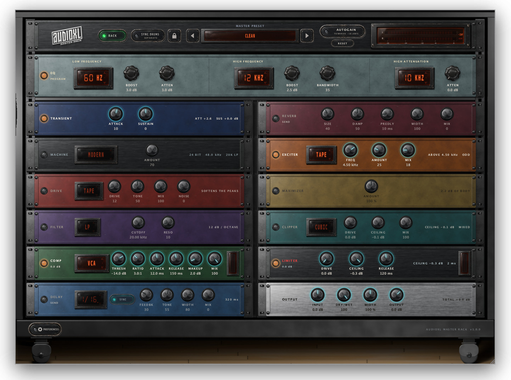
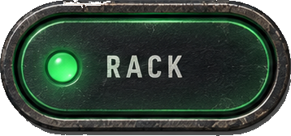
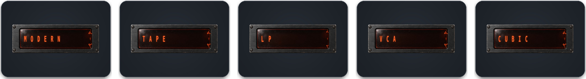
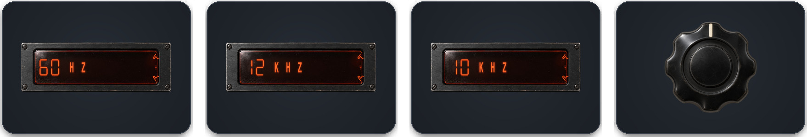
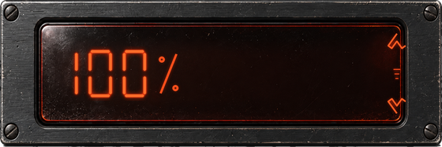
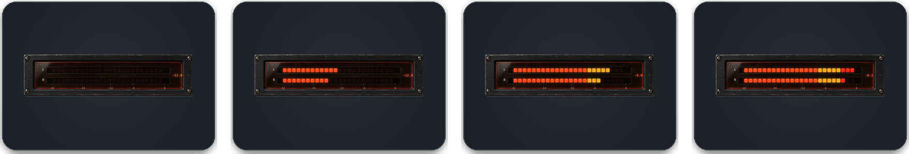
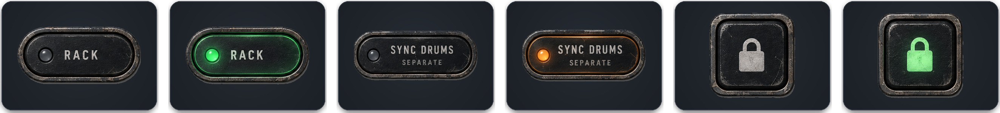
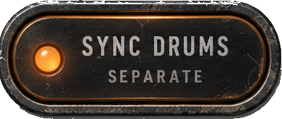

The DRUMS rack, on any track.

The master rack of AudioXL DRUMS, as an effect plugin in its own right.
The stages are the same ones as in the instrument: what you hear here is what you hear inside DRUMS — now on a track, a bus or the master.

The classic drum-machine converters.
Four from DRUMS, four new.
VCA, Opto, FET, Vari-Mu.
In six categories.
Read it top-left to bottom-right: the order sound actually flows.
Pultec EQP-1A style. Stepped frequencies, the rest by ear.

BOOST + ATTEN on one frequency: the curves differ, so they don’t cancel — bigger kick, less mud.
A bell with BANDWIDTH: narrow and tall is air, wide and low is presence.
Its own shelf. With the boost: a softer top that keeps the sparkle. RBJ biquads + a blended valve stage.
With tilt EQ, parallel mix and envelope-keyed noise.
Same engine, four behaviours: 8 ms on FET is not 8 ms on VARI-MU.
Regenerates the top above FREQ instead of EQ-ing it.
One knob, a fixed 180 Hz split: tape weight on the lows, valve presence on the highs, make-up that grows with AMOUNT. 0 % is an exact bypass.

No gain to breathe: it shaves the peak sample by sample. Hard · Soft · Cubic · Fold · Diode — colour changes, volume doesn’t.
Fixed lookahead, reported to the host and compensated. DRIVE 0–18 dB, RELEASE 10–500 ms, and a CEILING that is measured, not estimated.
Thresholds are absolute decibels. Autogain feeds them what they expect.

No setup: AudioXL plugins find each other, even across processes.

DRUMS keeps its rack.
Engages when DRUMS arrives.
This rack colours now.

Same switch as SYNC MASTER RACK in DRUMS — flip it from either side.
Clipper and maximizer included. Sync, padlock and autogain stay out: they are session choices, not sound.
Demo: 0.4 s of noise every 30 s, faded in and out — the audio is never cut. One serial, AXR-…, removes it at once.